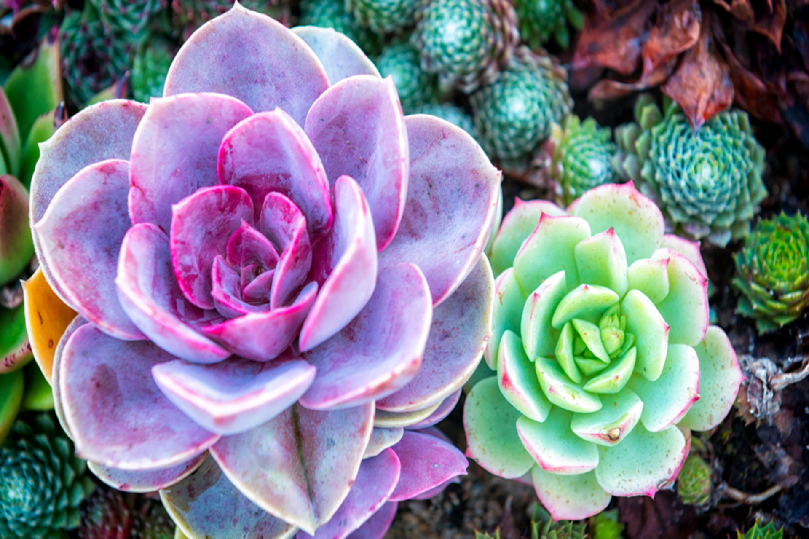

GIVING THEM BEAUTIFUL COLORS
Try as we might to avoid it, stress is a natural part of life. While it might not always seem like it, going through a period of stress can help you grow as an individual.That theory also applies to many types of succulents. In fact, there are many colorful succulents that actually produce more beautiful and vibrant colors when they are exposed to stressful conditions.If you’re curious how to properly stress succulents - or why you should be stress coloring succulents in the first place - you've come to the right place. This article will tell you everything you need to know about how to stress succulents for color.
WHAT IS SUCCULENT STRESS?
Visit any gardening supply store or nursery, and you’ll likely be blown away by the colorful succulents lining the shelves. Take those succulents home, and you may be dismayed that they turn a more bland shade of green after a short period of time.
Your succulents are healthy, so what gives? In short, you’re treating them too well! Succulents need a bit of stress in order to showcase more beautiful blooms. Stress comes in all shapes, sizes, and forms, and it’s a simple fact of life for all organisms. Plant stress, including succulent stress, usually arises as a response to a deviation from ideal growing conditions. For example, if you notice that plants are growing very tall in low light conditions (or becoming “leggy”) that generally means that they are exhibiting a stress response. Succulents are no different. When they are stressed, succulents produce anthocyanin and carotenoid, two pigments that help protect the plant from environmental stressors. In particular, these pigments protect against sun damage. The more anthocyanin and carotenoid a plant produces, the more colorful it becomes.
HOW TO STRESS SUCCULENTS INDOORS: 4 METHODS
Although you don’t want your succulents to be stressed all the time, there are several ways you can introduce stress to encourage more beautiful colors. Focus on these four methods as opposed to just stressing out your succulent willy-nilly (in other words, don’t let your succulents be munched on by pests or trampled by your kids to encourage it to become more colorful). Try these safe stress methods instead.
On the flip side, you may be able to encourage your succulents to display bright shades of color by putting them in more sunlight. Consider starting the plants outdoors, where they’ll be in bright shade for up to one week (note - only do this if you live in a warm enough climate to grow succulents outdoors, or you may kill them with too much cold), Move them to a partial sun location and give the plants another week or so to adapt. Then, bring the plants indoors and position them under grow lights or in another full-sun environment.
HOW TO COLD STRESS SUCCULENTS
Begin with a healthy set of plants. Keep in mind that not all succulents will change color when stressed - you’ll want to choose varieties like aloes, kalanchoes, euphorbias, sedums, sempervivums, aeoniums, and echeveria. Agave doesn’t normally change color when stressed.
Just like light stress, cold stress can also encourage your succulents to become more colorful. Consider leaving the plant out in the cold, but make sure temperatures remain above freezing. Like with light stress, this shock can encourage a flush of pigments.
This process is a bit more delicate, however. You'll Want to keep a close eye on your succulent plants to make sure they aren’t pushed from stress to the brink of death by too much time below their cold hardiness thresholds.
HOW TO STRESS YOUR SUCCULENTS WITH MOISTURE
As with light and cold stress, you can also water-stress your succulent plants. This can be somewhat tough to do, as succulents are known for their ability to withstand long periods of drought! However, by cutting out water (the exact amount you should cut out will vary depending on what kind of succulent you're growing and how much water you are giving it now - consult your planting instructions for more information on this) you can often stress your plant out enough to flush pigments.